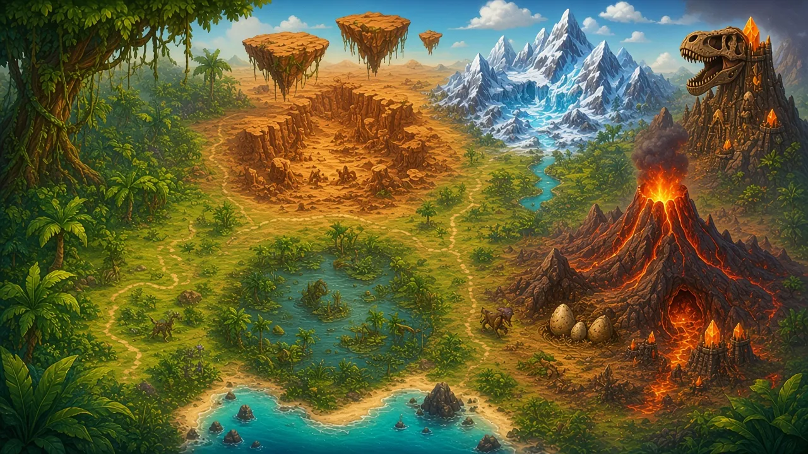

恐龍沿著道路衝向營地，抵達營門會扣生命。生命歸零即失敗，撐過所有波次即勝利。
建塔：點面板上的塔，再點空地。點已建的塔可升級（最高 3 級）或賣出（退回 70%）。
石矛塔 射速快、可打飛行。火山投石 範圍爆炸、打不到飛行。冰晶塔 緩速。毒液花 持續毒傷、無視護甲。特斯拉電塔 連鎖閃電。琥珀晶塔 超遠距離、專打血最多的恐龍。火把塔 便宜、照亮夜晚、會丟火把。
世界地圖：共 7 章 16 關。點地圖上的關卡節點看介紹，再按「出發！」（或再點一次節點）。紅色節點是章節魔王關。有些關卡有分岔路或兩個入口，恐龍會分頭進攻。
英雄：在關卡選擇畫面挑選原始人獵人・岩牙或馴龍師・翠拉。英雄會自動攻擊、擋住地面恐龍並累積經驗升級（最高 5 級）。拖曳英雄，或點英雄再點地點即可移動。技能列第一格是大招（有冷卻）。英雄倒下後會倒數復活。
馴服：擊倒地面恐龍有機率收服成友軍，會在原地擋路並攻擊（上限 3 隻，馴龍師 4 隻且機率更高）。魔王與飛行恐龍無法收服。
進化：塔升到 3 級後可選兩種進化之一（每種塔 2 條路線，共 12 種），外觀、子彈與效果都不同。賣出一樣退回 70%。
天氣與夜晚：下雨削弱火、強化電；起霧射程變短；暴風雪讓恐龍變慢、冰更強；火山灰強化火。夜晚只有塔、英雄與火把塔的光照範圍內能被攻擊，記得蓋火把塔！每關都有專屬魔王與技能。
技能（有冷卻）：隕石（點地圖砸下）、尖刺陷阱（放在道路上）、空投補給（立即獲得金幣與道具）。
道具：草藥（+5 生命）、冰凍炸彈（凍住全場 3 秒）、金幣袋（+150 金）、炸藥（點地圖爆破）。道具會保留到下一關。
環境：點岩石花金幣敲碎可得獎勵與化石；沼澤泥坑會減速；火山噴氣口會燒傷恐龍；恐龍蛋會孵化，先點破它！
剩餘生命越多星數越高（最多 3 顆）。進度、圖鑑、化石與成就都自動存在本機。